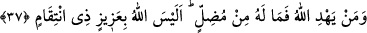
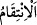
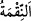

(a.s.) Hâlid bin Velîd’e o ağacı kökünden sökmesini ve o şeytanı öldürmesini buyurdu.
Müşrikler toplandılar ve Hâlid’i Uzzâ’nın kendisini helâk edeceğini veya delirteceğini
söyleyerek korkuttular. Hâlid onların bu sözlerini Hz. Peygamber’e bildirdi. Âlemlerin
Rabbi onun hakkında: “Allah kuluna kâfî değil midir?” âyetini gönderdi. Hâlid geri
döndü ve o ağacı kökünden söktü. Ağacın altında siyâhî, çirkin görünüşlü bir adam
gördü. Onu öldürdü. Hz. Mustafa (a.s.) şöyle buyurdu: “İşte bu Uzzâ’ya ebediyyen
ibâdet edilmeyecek.” Keşfü’l-esrâr’da böyle geçmektedir.
“Allah, kimi saptırırsa” yâni kimi sağlam yoldan ve dosdoğru anlayıştan sapmış bir
kimse hâline getirir de nihâyet Allah’ın kâfî olduğu ve Hz. Peygamber (a.s.)’ı
koruyacağı hususunda gaflete düşer ve kendisine hiçbir fayda ve zarar veremeyecek
varlıklardan korkacak olursa “artık onun yolunu doğrultacak” onu herhangi bir hayra
iletecek “biri yoktur.”
37. Allah kime de hidayet ederse, artık onu saptıracak yoktur. Allah, mutlak güç
sâhibi ve intikam alıcı değil midir?
“Allah kime de hidâyet ederse,” yâni kimi sırât-ı müstakîme irşâd ederse, “artık onu
saptıracak yoktur.” Onu hedefinden çevirecek ya da gittiği yola kötülük dokunduracak
kimse yoktur. Çünkü O’nun yaptığı bir şeyi geri çevirebilecek ve irâdesine karşı
koyabilecek bir varlık yoktur.
et-Te’vîlâtü’n-Necmiyye’de der ki: “Burada işâret vardır ki hayır ve şerri Allah’tan
başkasından görmek dalâlettir. Allah dışındaki varlıklarla korkutmak ise sapıklığın
zirvesidir. Bu sebepledir ki “Allah, kimi saptırırsa artık onun yolunu doğrultacak biri
yoktur.” (36. âyet) buyurdu. Çünkü, hakîkatte yol gösterici (hâdî) olan Allah’tır. O halde
Allah’ın saptırdığını başkası nasıl doğruya iletebilir! Yine Allah kimi doğru yola
iletirse, onu saptıracak da yoktur! Çünkü hakîkat üzere Mudill/saptırıcı olan Allah’tır.
Öyleyse Allah’ın doğru yola ilettiği kimse nasıl saptırılabilir!”
“Allah, mutlak güç sâhibi” gâlib, karşı konulmaz, kendisine kulluk edenleri aziz ve
güçlü kılan “ve intikam alıcı” dostlarının intikamını düşmanlarından alan “değil
midir?” Yâni, O mutlak güç sâhibi ve intikam alıcıdır, demektir. Çünkü daha önce
geçtiği gibi istifhâm/soru olumsuzluktan önce gelirse tahkik ve takrîr ifâde eder; sorulan
şeyin gerçekte var olduğunu pekiştirmiş ve onaylamış olur.
“
” İntikam almak demektir. Bahru’l-ulûm’da ise şöyle der: “
” sıkıntı/şiddet
ve cezâ vermek demek olan “
”dendir.